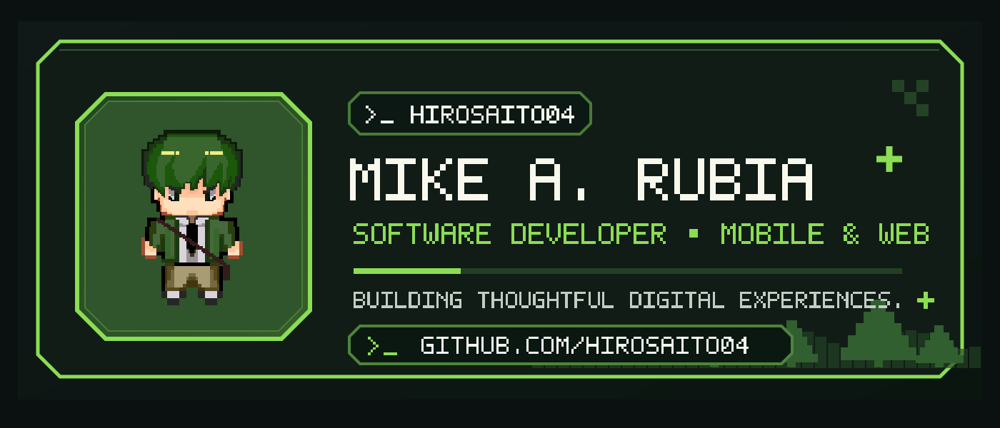
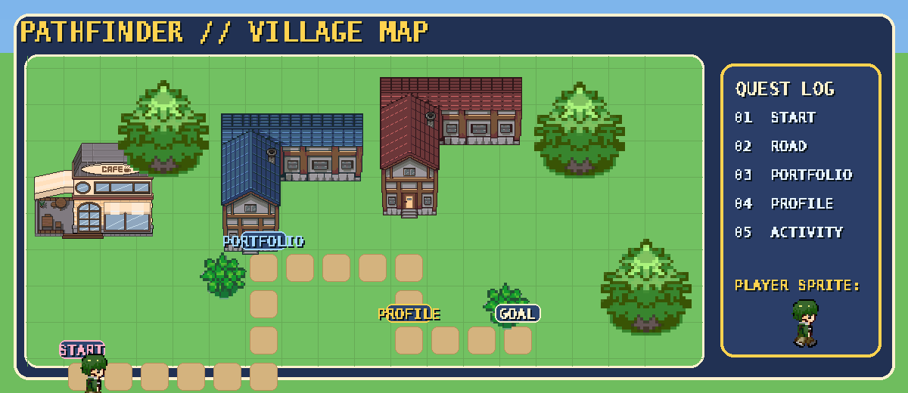
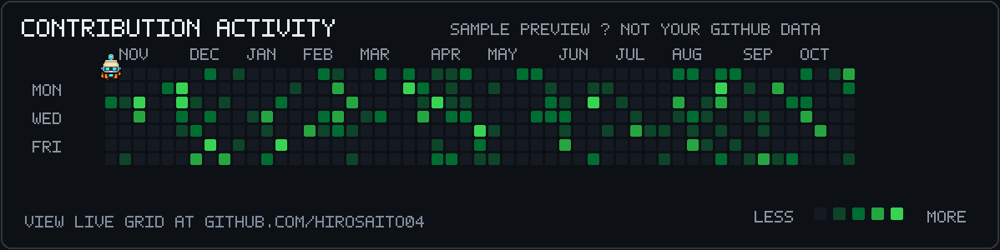

01 / PATHFINDER WORLD
Actual TMX village world with moving player sprite. Modify maps/village.tmx in Tiled to redesign the map and route.

02 / CONTRIBUTION ACTIVITY
This review shows clearly labeled sample levels. When you run the contribution sync, your real public GitHub calendar is used, with Brio running across it.
